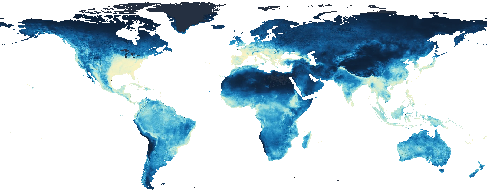

MODEL BENCHMARK
All model evidence ↗
Research foundation · Earth-observation fusion
Mosquito habitat models, tested where they have never seen data.
Climate, landscape, human footprint and AlphaEarth satellite embeddings, fused by ten methods. Four model families are benchmarked under nine ways of holding out the world, and a research loop records why each one succeeds or fails.
HiCo-Fuse · Ae. albopictus · 0.2°LAT — LON —

LowHigh share percentile
Key results
The binding constraint is not the fusion layer
Five results from 41 holdout splits and five redesign iterations.
Explore the evidence
Where to look next
Released global maps
12 models · 4 input representations × 4 learners
2024 training · NEON temporal checks
1,601Training locationsShared across all 12 maps
739Presence locations625 iNaturalist + 114 AGES
862Background locationsOther mosquitoes; not confirmed absences
373Temporal validation sitesNEON 2026 · 24 detections
GLOBAL HABITAT SUITABILITY
2024Loading research layers…
A · Selected model
B · Comparison
Loading rasterDownload map preview ↓
Models
How the models were built and tested.
Model familiesFusion methodsBenchmarkExperimentsReleased maps
01 · Model families
Four model families, built in sequence
Each family started from what the previous one could not do. Scores are only comparable within a family, because tasks and labels differ.
02 · Fusion methods
Ten ways to combine Earth-observation evidence
From simple concatenation to constrained, support-aware pooling. Each card states the rule, what it assumes and what the holdout benchmark showed.
03 · Holdout benchmark
Nine models under nine ways of holding out the world
Multinomial composition of Culicidae reports (Ae. albopictus, Ae. aegypti, Culex, Anopheles, other) in 7,004 cells at 0.05°, with 105 features. Select a holdout design and a metric.
Leave region out
All designsDarker = better · selected design outlined
04 · Experiments
What each redesign tested
Representation and fusion benchmark · Ae. albopictus presence vs target-group background
Loading matched model results…
| Representation and learner | AP mean | Fold SD | ROC-AUC | Result source |
|---|---|---|---|---|
| Loading frozen baselines and new MLP results… | ||||
Fold SD describes variation across the six spatial contexts; it is not a confidence interval. Background records are not confirmed absences. The twelve released maps built from these baselines are compared below.
05 · Released map models
The evidence behind the twelve released maps
Global Ae. albopictus maps from four input representations and four learners, selected on one 1,601-site spatial development cohort and checked against NEON surveys.
Average Precision (AP) summarises how well positive sites are ranked. Development and NEON diagnostic scores use different labels, regions and prevalence; their difference is not a measure of global accuracy loss.
Inputs × prediction models
Select a combination to open its map.Development and NEON diagnostic performance
Earth-observation foundation encoders
Point benchmarks and global deployment are separate milestones.Full result tables15 collections · filter, page through or download any table as CSV
Data
Know what the models learn from.
Observation labels, environmental predictors, satellite embeddings and independent surveys each play a separate role.
01ObserveSpecies · site · date · source
→
02PrepareDeduplicate · screen · align
→
03EvaluateFreeze cohorts · split spatially
→
04MapPredict · mask · audit
1,601Released-map cohort739 presence + 862 target-group background sites, Ae. albopictus, 2024
7,004Research report cells0.05° cells with iNaturalist Culicidae reports, 5 classes, 2022–2025
105Input featuresClimate, landscape, human footprint and 64 AlphaEarth dimensions
373Independent survey sitesNEON 2026, ≥10 km from development sites
Background is not confirmed absence. iNaturalist records obtained through GBIF are one source of observations, not two independent datasets. Point coordinates are never published; coverage is shown in 5° cells.
Observation coverage by source
180°W0°180°E
Fewer recordsMore records
Sources and their roles
Contribution and limitations of each inputFeature dictionary
Retrospective research
What are we mapping?
The released maps rank relative habitat suitability for Aedes albopictus under 2024 environmental conditions. The research models predict the composition of mosquito reports (Ae. albopictus, Ae. aegypti, Culex, Anopheles, other) per 0.05° cell.
Neither is a forecast, a calibrated presence probability, an abundance estimate or a disease-risk map. This is a frozen public snapshot, not a live system.
Research pipeline
Every experiment is chosen by the last one's failure
The project runs as a recursive loop. Each iteration records its question, hypothesis, holdout design, result, failure and next step in a structured ledger, so rejected ideas are not retried without new evidence.
- DataiNaturalist reports, surveys, external compendia
- RepresentationClimate · landscape · human · AlphaEarth 64-D
- Fusion10 methods, from concatenation to support decay
- Spatial modelFlat, hierarchical, observation-aware
- Validation9 holdout designs, paired sign tests
- DiagnosisDistance, novelty, prior shift, proxies
- RedesignNext hypothesis from the observed failure
How models are validated
Random splits are a reference only; transfer designs are the headlineRandom 5-fold cells. Mostly interpolation; optimistic.
Hold out whole blocks; the scale curve shows how skill decays with distance.
Train on five world regions, test on the sixth. The main transfer test.
Hold out one of five climate clusters: novel environments.
Hold out tropical, arid, temperate or cold zones.
Train on 2022–2024, test on 2025, alone or in held-out blocks.
Limitations
What the benchmark cannot yet answer
Regional species pool
Which species have arrived in a region cannot be learned from environment. The next data milestone is a species-pool layer for all five classes from checklists and non-iNaturalist records.
Data deserts
Africa has 75 report cells and Latin America is weakest for every model. Global maps there are extrapolations; no architecture replaces absent evidence.
Observation bias
AlphaEarth encodes human footprint (spatial-CV R² up to 0.88), so report-based models can learn where people report. Surveys spanning the urban gradient are needed to separate effort from habitat.
Not risk or abundance
Maps rank relative habitat suitability or report composition. They are not calibrated presence probabilities, abundance, disease risk or forecasts.
Terms and metricsPlain-language definitions with worked examples
Research ledger
Ledger of iterations
One structured entry per experiment, with what improved, what failed and the next step it set.
Release review
This public site does not run training or inspect new data. Changes appear here only after a reviewed publication.
Methods literature
Preprints are labelled; method papers do not establish mosquito-scale accuracyCoordinates plus satellite embeddings with bias-aware sampling.
van Merriënboer et al. (2026) ↗Masked-autoencoder pretraining for time-series and multispectral imagery.
Cong et al. (2022), NeurIPS ↗Scale-adaptive self-supervised encoders across sensors.
Astruc et al. (2024) ↗Multitemporal multispectral foundation model; used here as a frozen encoder.
Szwarcman et al. (2024) ↗Fusion across geospatial modalities; generated modalities are not independent evidence.
Jakubik et al. (2025) ↗Background selection and spatial evaluation are central design choices.
Zbinden et al. (2024) ↗Conventional baselines and spatial holdouts before complex networks.
Kellenberger et al. (2026) ↗Direct Ae. albopictus evidence; regional, not a global transfer test.
McMahon et al. (2022) ↗